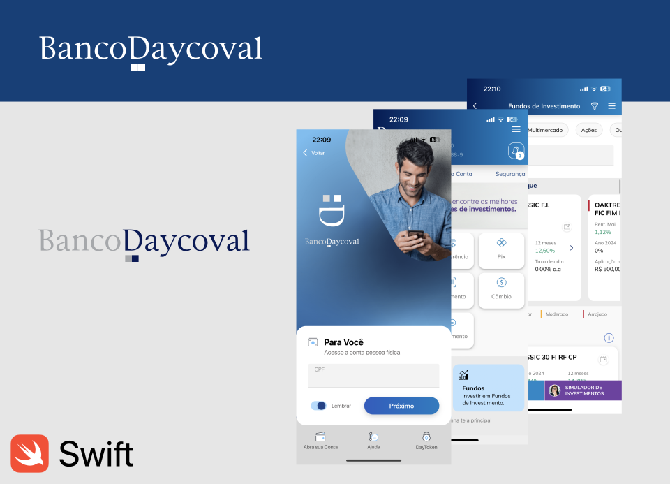
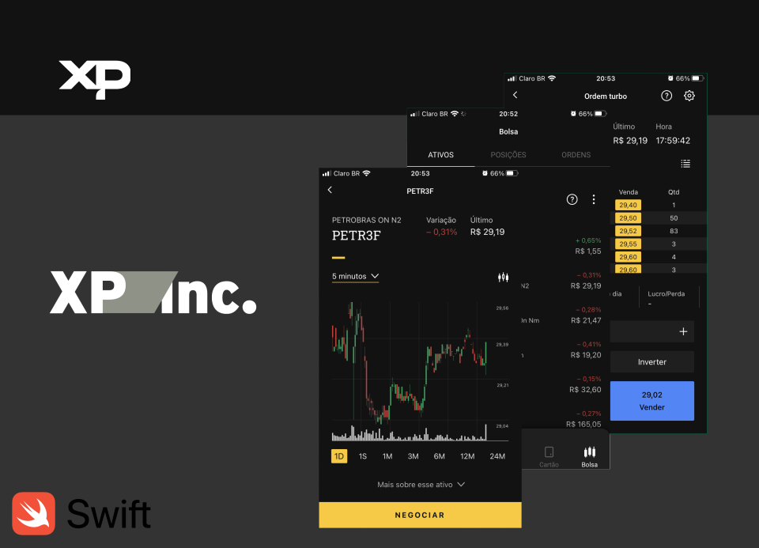
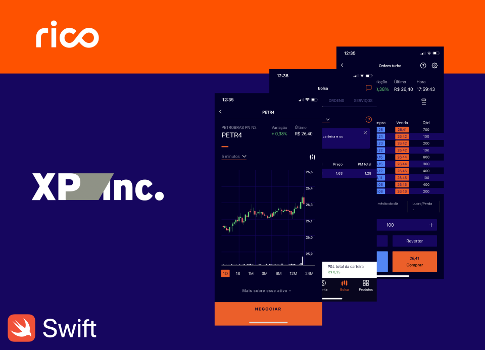
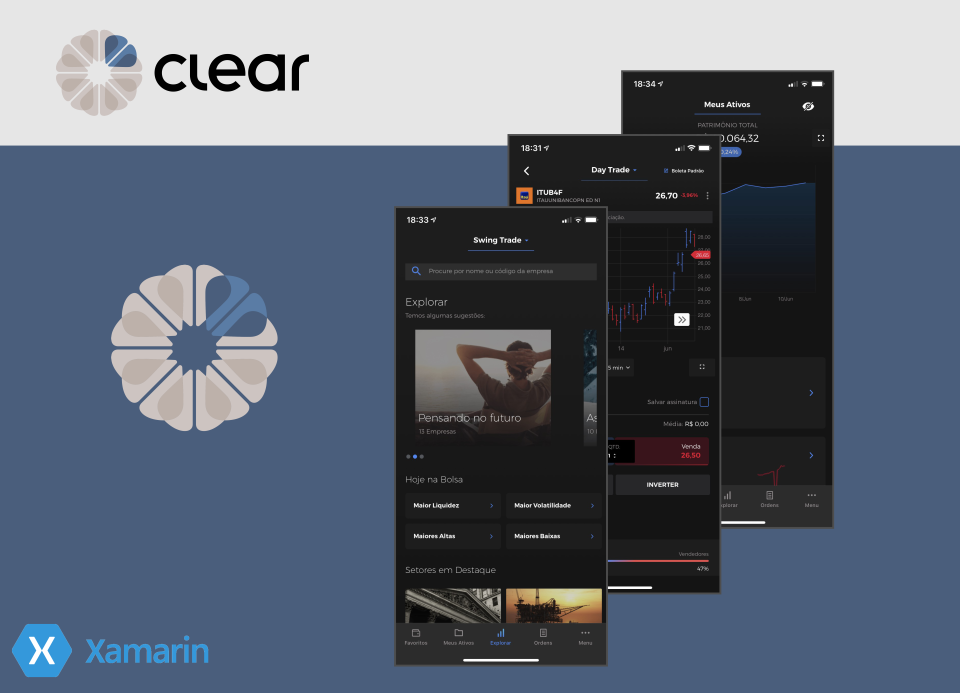
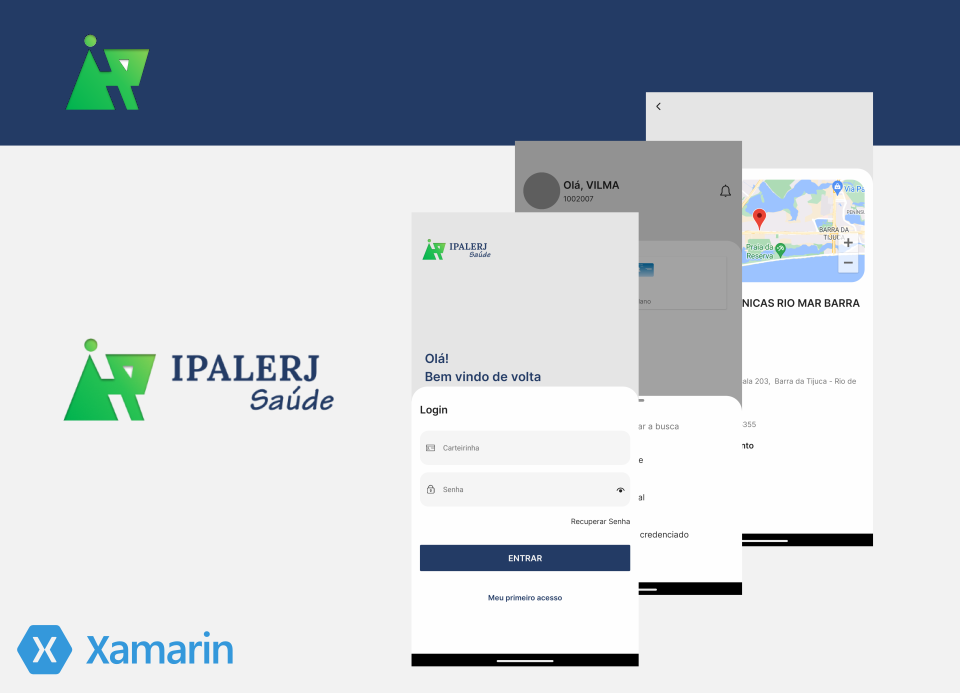
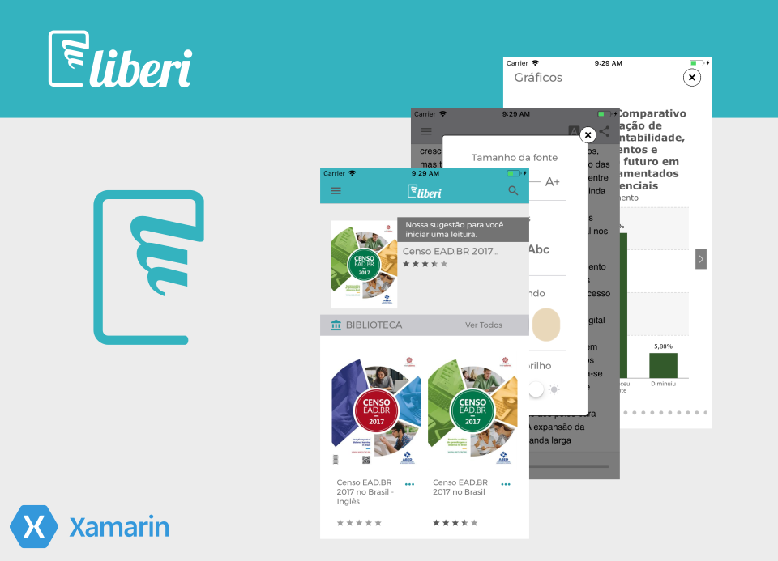
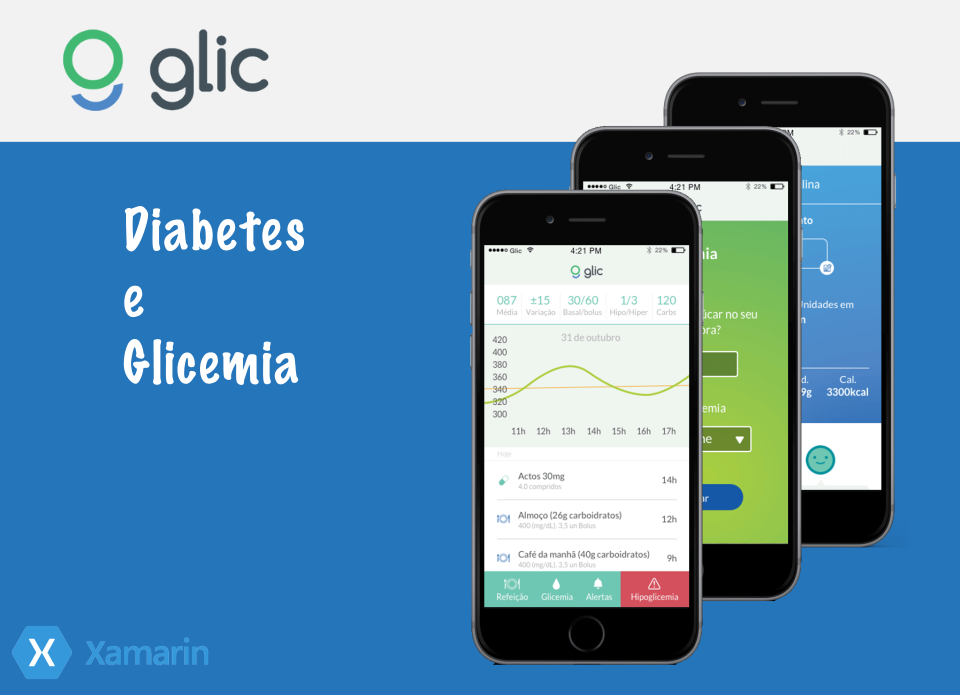

Sobre
Trabalho como desenvolvedor desde 2007. Iniciei com o desenvolvimento web PHP/JavaScript, onde em 2008 comecei a desenvolver e se dedicar a linguagem C# .NET. A partir de 2011 venho estudando e trabalhando com o iOS SDK (Swift/Objective-C), e em 2016 vislumbrando o crescimento e melhoria da plataforma Xamarin, iniciei o desenvolvimento de aplicativos multiplataformas (iOS/Android) utilizando Xamarin.FORMS, atualmente evoluido para .NET MAUI, onde em 2018 comecei a ministrar cursos presenciais sobre este framework. Atualmente trabalho com iOS SDk (Swift) e aprofundo meus estudos no SDK Flutter, desenvolvendo projetos com a tecnologia.
Download Currículo
Eventos
• Apps on Fire, Firebase & Xamarin (Curitiba/PR) - Outubro/2016
• XAMARIN Summit (São Paulo/SP) - Outubro/2016
• InteropMIX 2016 (Curitiba/PR) - Novembro/2016
• Xamarin Dev Days (Curitiba/PR) - Novembro/2016
• Xamarin Fest (Curitiba/PR) - Maio/2017
• XAMARIN Summit (São Paulo/SP) - Maio/2017
• Global Azure Bootcamp (Curitiba/PR) - Abril/2018
• XAMARIN Summit (São Paulo/SP) - Junho/2018
• Global Azure Bootcamp (Curitiba/PR) - Abril/2019
• O Poder do XAML, criando interfaces incríveis! - Junho/2019
• Flutter Talk 2019 (São Paulo/SP) - Agosto/2019
• XAMARIN Summit (Florianópolis/SC) - Outubro/2019
• Flutter SP Meetup Nubank (São Paulo/SP) - Novembro/2019
• Xamarin.Forms - boas práticas e melhorias de performance - Abril/2020
• Flutter LATAM Conf 2020 - Junho/2020
• Criando uma esteira de CI/CD para apps mobile com App Center - Julho/2020
• XAMARIN Summit - Agosto/2020
• Skia Sharp com os Magos do XAML - Setembro/2020
• Aloha MAUI, Mahalo Xamarin! - Outubro/2020
• Flutter LATAM Conf 3º Edição 2020 - Novembro/2020
• MokeyFestUSA - Novembro/2020
• Desbravando o mundo mobile com iOS - Fevereiro/2021
• É hora de mergulhar de cabeça no .NET MAUI? - Maio/2021
• WWDC21 - Junho/2021
• Futuro Mobile na XP Inc (TDC 2021) - Dezembro/2021
• Injeção de Dependência com Swift - Março/2022
• WWDC23 - Junho/2023
• 16 Edição NUBANK - Meetup Flutter SP (São Paulo) - Abril/2024
• WWDC24 - Junho/2024
• 62º CocoaHeads SP WWDC Recap @OLX (São Paulo) - Junho/2024
• MAUI e MVVM ultilizando Community Toolkit - Julho/2024
• 2º CocoaHeads SP Workshop @Thoughtworks (São Paulo) - Julho/2024
• UBER Mobile Summit (São Paulo) - Agosto/2024
• NUBANK - Mobile e Observabilidade Estratégica (São Paulo) - Outubro/2024
• NUBANK - Aprendizados em Plataformas de Experimentação | DS & ML (São Paulo) - Novembro/2024
• Apple - Apple Intelligence and machine learning (São Paulo) - Fevereiro/2025
Portfólio

O aplicativo Banco Daycoval é a forma mais prática e segura para abrir e gerenciar sua conta corrente ou consultar seu cartão de crédito.

Com o aplicativo da XP, você pode alcançar seus objetivos financeiros com segurança e praticidade, de qualquer lugar, a qualquer momento.
O aplicativo da XP Investimentos é exclusivo para clientes. Caso ainda não tenha uma conta, abra já a sua e conheça o melhor jeito de investir.

O App da Rico quer descomplicar sua vida financeira. E para isso juntamos tudo em um só lugar: tenha acesso aos
melhores investimentos do mercado; conta digital, para receber salário, utilizar pix e outras funcionalidades
e o cartão Rico, de crédito e débito para facilitar sua vida.

No aplicativo da Clear é possível investir em renda fixa e renda variável.
Investimento em ações, trading, minicontratos, swing trade, day trade, contratos cheios, fundos imobiliários e Tesouro Direto.
Gerencie seus investimentos de onde estiver. Acompanhe a variação patrimonial dia-a-dia. Tudo isso sem taxa de corretagem!

O IPALERJ saúde reuniu em um só lugar todas as informações sobre o seu plano de saúde. Tenha na palma da mão sua carteirinha virtual.
Explore nossa rede referenciada de hospitais, laboratórios e médicos. Tudo na palma da sua mão.

Você terá acesso a previsão do tempo para 5 dias de forma mais rápida e fácil, com um layout simples,
mais moderno, intuitivo e totalmente novo.

O Liberi é a escolha de quem está em constante movimento. Mais do que um simples leitor de ebook, ele traz em seu ambiente intuitivo e amigável, diversos recursos animados e que irão tornar a sua leitura uma experiência única, independentemente de onde você estiver.

O Glic é o primeiro app para diabetes e controle de glicemia do brasil desenvolvido para auxiliar a rotina de cuidados com o diabetes através de diversas funcionalidades como consulta e registro de carboidratos, cálculo de dose de insulina, lembretes de medicamentos e registro de glicemia.

O VIAWEB mobile você pode operar o alarme da sua residência, empresa, escritório, casa de praia, casa de campo... via smartphone ou tablet, de qualquer lugar do planeta que tenha acesso a internet. Seu Smartphone passa a funcionar como um teclado móvel.
ATENÇÃO: Esses aplicativos são de propriedade única e exclusiva das instituições por onde trabalhei ou prestei serviço.